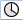

Mit Trace steht Ihnen eine Oszilloskop-Funktion zur Verfügung die eine grafische Darstellung von folgenden Daten (Signalen) ermöglicht:
Allgemeine Daten der NC
PLC-Daten
Die Funktion dient zur Fehlersuche und -beseitigung sowie zur Maschinenleistungs- und Prozessleistungsanalyse. In einer Sitzung werden Daten (Signale) kurz vor oder nach einem Ereignis aufgezeichnet.
Die aufgezeichneten Daten werden optisch in Form von Kurven, den sogenannten Verlaufsgraphen, dargestellt.
Sie haben die Möglichkeit die Aufzeichnungsart individuell einzustellen.
Die aufgezeichneten Daten können Sie in eine XML-Datei speichern. Die gespeicherte Datei kann dann wieder geladen werden, um sie zu einem späteren Zeitpunkt auszuwerten.
Signale (Daten) geben an, was aufgezeichnet wird:
NC-Variablen (Achsdaten, Antriebsdaten, Kanaldaten usw.)
PLC-Daten
Zyklische Ereignisse | |
 | Interpolationstakt (IPO-Takt) |
PLC-Takt OB1 | |
Lageregeltakt (Servo-Takt) | |
Nicht zyklische Ereignisse | |
Aufzeichnung durch Trigger
Aufzeichnung manuell starten und stoppen
Zum Analysieren des Ergebnisses, stehen Ihnen folgende Funktionen zur Verfügung:
Verlaufsgraphen skalieren
Verlaufsgraphen zoomen
Einen Verlaufsbereich mit Hilfe von Markern definieren